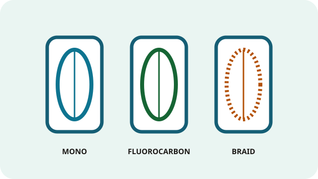

Fishing Line
Line connects you to the hook or lure. Its breaking strength, stretch, visibility, and abrasion resistance all affect casting and fish control.
Line types

Monofilament
Stretchy, easy to knot, buoyant, and affordable. A forgiving choice for beginners, bait rigs, and treble-hook lures.
Typical use: 4–8 lb for stocked trout and panfish; 8–12 lb for many bass setups. Adjust to conditions and the rod rating.
Fluorocarbon
Low-stretch and abrasion-resistant, and often used as a leader. It sinks more readily than mono and can be harder to knot.
Typical use: light leaders for clear water and trout; heavier leaders around rocks or bass cover.
Braided line
Thin for its strength, with little stretch and high sensitivity. It can cut into itself on a spool and may be more visible, so anglers often add a mono or fluorocarbon leader.
Typical use: bass around weeds, long casts, or situations needing sensitivity. Set the drag carefully because braid has little stretch.
Fly line
Thick, weighted line that loads the fly rod and carries an unweighted fly. Match the line weight and taper to the fly rod; backing sits beneath the fly line.
Typical use: weight-forward floating line is a versatile starting point for many trout situations; sinking lines suit deeper presentations.
Choosing line strength
“Pound test” is the approximate force the line can handle under specified conditions; knots, abrasion, and wear reduce it. Start with the rod and reel’s printed line range, then consider fish size, current, cover, and lure weight. Re-tie damaged or frayed line.
Line-strength suggestions are broad examples, not guarantees. Oregon waters can have special rules for line, hooks, bait, or fishing methods; check the current regulations for your exact location.